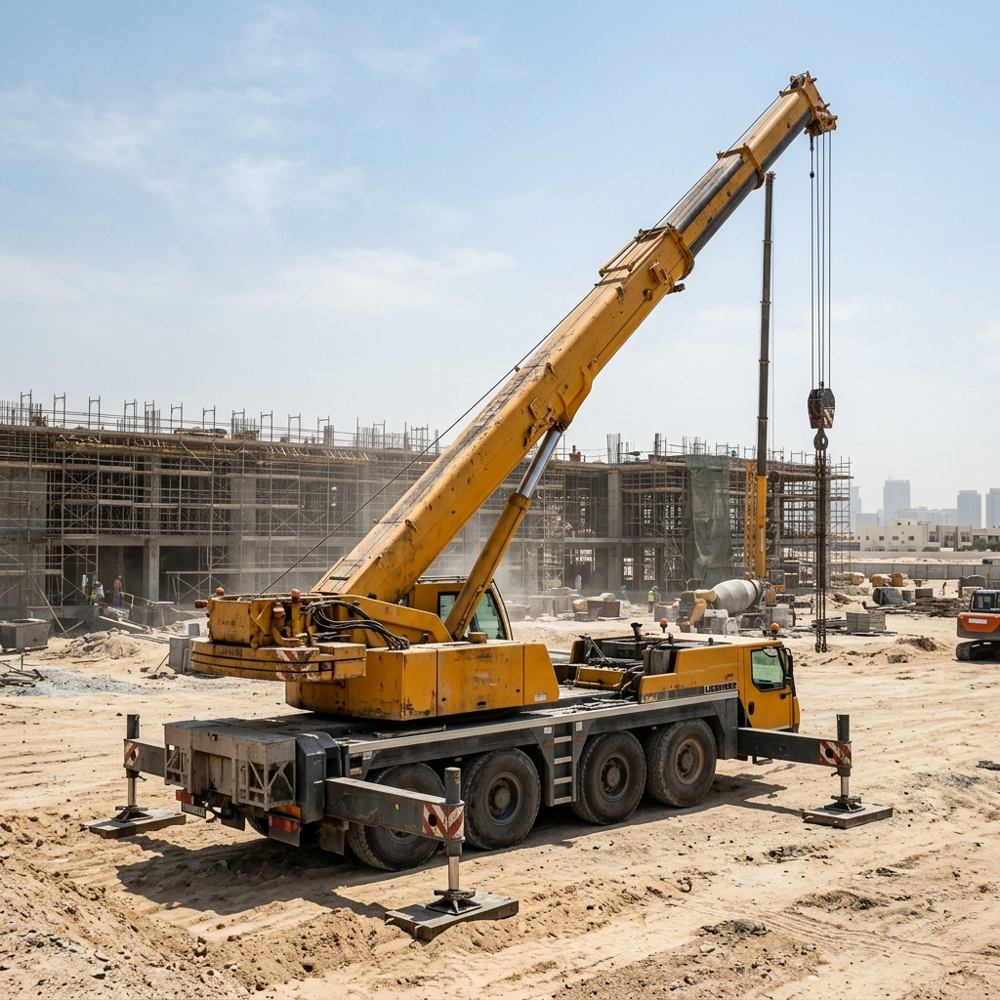

Equipment and freight, without the phone tag.
Dozr connects UAE construction and port logistics teams with verified equipment and freight vendors - one request, tracked and proven end to end.
Why we built this
UAE fleet and freight operators run on WhatsApp voice notes, shared spreadsheets, and paper delivery notes - fast to start, hard to trust at scale. Dozr replaces the phone-tag part of the job (finding a vetted vendor, agreeing a price, knowing where the truck is) while keeping the parts that already work: WhatsApp for confirmations, a human on the other end of every quote.

How Dozr works
Search, don't call around
Browse vetted equipment and freight lanes by category, dates, and location - no cold-calling five yards to compare.
Track it live, no login
Every booking includes a GPS tracking link - open it on any phone, watch the ETA update, no app or account needed.
Prove the delivery
A signed ePOD closes the loop for both sides - a dispute-proof record, not a lost paper slip.
Who it's for
Dozr serves two sides of the same job: construction, port, and logistics teams booking equipment or freight, and the UAE fleet operators who supply it. See the full flow on how it works, or get in touch directly.
Contact us